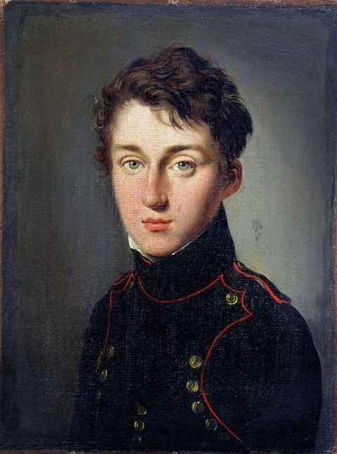
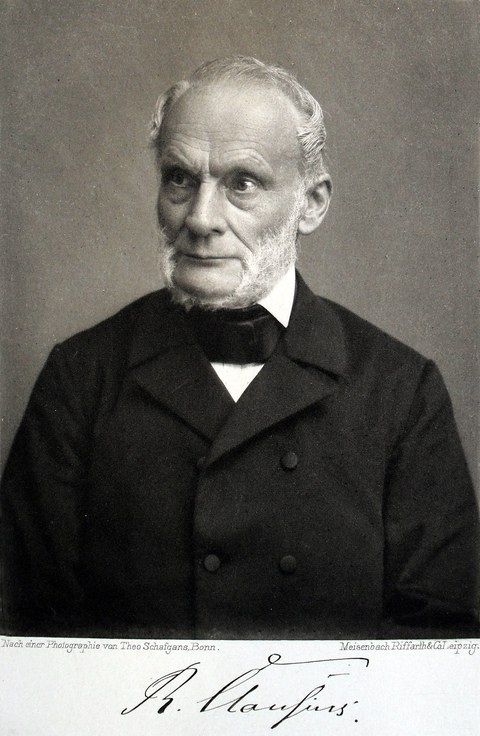
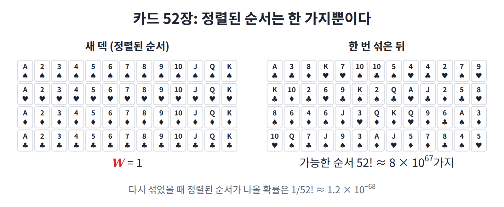
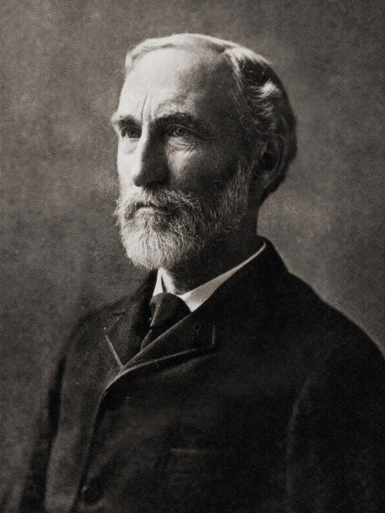
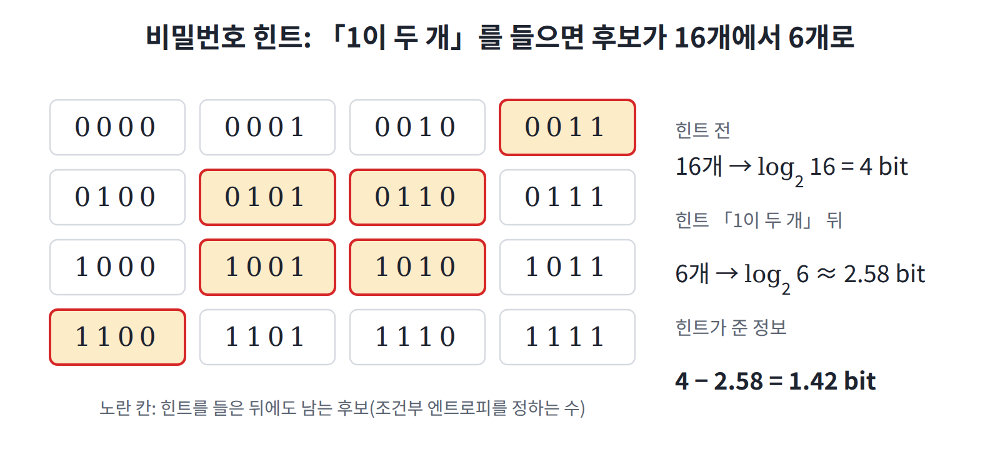
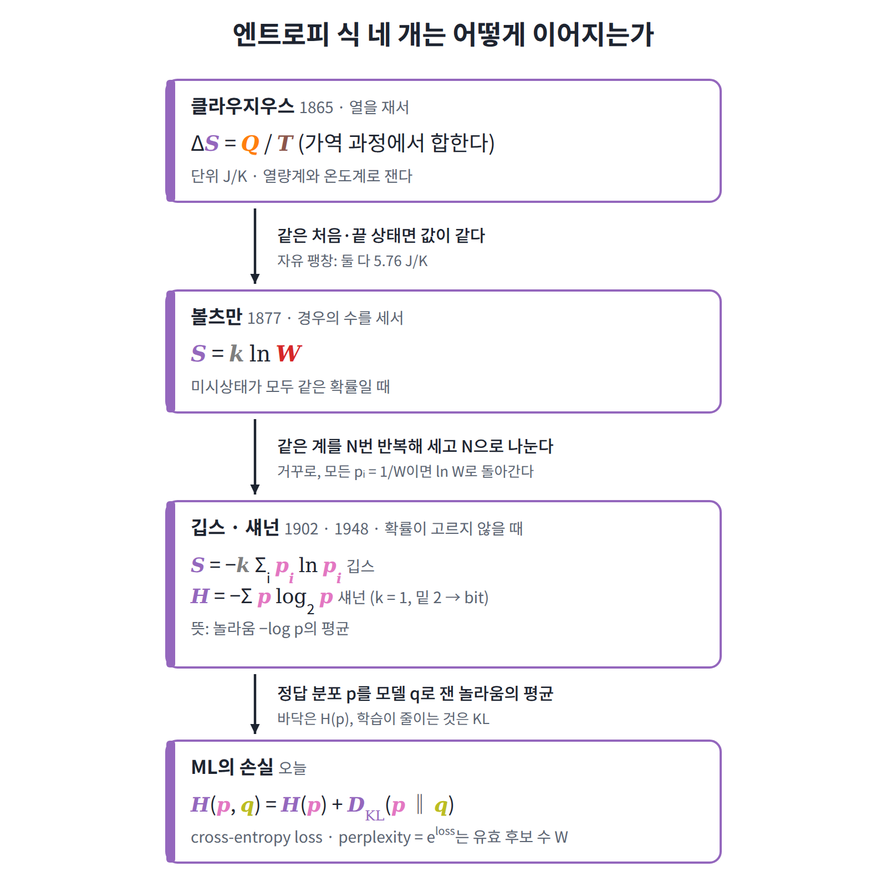

2장 — 엔트로피
이 장에서 배우는 것
이 장에서 다루는 엔트로피는 한 문장으로 정의할 수 있다. 엔트로피는 "거시상태만 알 때 미시상태에 대해 아직 모르는 양"이고, 그 크기는 경우의 수의 로그로 잰다. 짧은 정의이지만, 이 정의 하나로 증기기관의 효율을 따지던 열역학과 오늘날 언어 모델의 loss를 같은 말로 설명할 수 있다.
이 장에서는 먼저 열기관에서 나온 클라우지우스의 엔트로피와 볼츠만의 S = k ln W가 같은 양이라는 것을 숫자로 확인한다. 그런 다음 왜 하필 로그여야 하는지, 로그를 다른 함수로 바꿀 수 없는 이유가 무엇인지를 따져 본다. 마지막으로 확률이 고르지 않을 때의 엔트로피 −Σ p ln p를 계산해 보고, 이 식으로 cross-entropy loss와 perplexity를 읽는 법을 익힌다.
역사: 열기관에서 태어난 엔트로피
엔트로피는 원자론보다 먼저, 증기기관의 효율을 따지는 공학 문제에서 나왔다. 그래서 이 양을 처음 정의한 사람은 엔트로피가 무엇인지는 몰랐고, 어떻게 재는지만 알았다. 이야기는 두 사람에게서 시작된다.
1824년 프랑스의 공학자 카르노는 증기기관을 아무리 잘 만들어도 효율에는 한계가 있고, 그 한계는 뜨거운 쪽과 차가운 쪽의 온도로만 정해진다는 것을 보였다. 다시 말해 열이 일로 바뀌려면 뜨거운 곳에서 차가운 곳으로 흘러야 한다는 것이다.

이 생각을 이어받은 사람이 독일의 물리학자 클라우지우스다. 그는 1850년부터 1865년에 걸쳐 "열은 저절로 뜨거운 곳에서 차가운 곳으로만 흐른다"는 경험 법칙을 숫자로 표현할 방법을 찾았고, 그 답으로 물체가 절대온도 T에서 열 Q를 받으면 Q/T만큼 늘어나는 양을 정의했다. 1865년 그는 이 양에 그리스어 "변화(trope)"에서 딴 엔트로피 (entropy)라는 이름을 붙였는데, "에너지"와 비슷하게 들리도록 일부러 고른 이름이었다. 여기서 한 가지를 확인해 두자. 이 정의에 들어 있는 T는 온도계로 재는 온도다.

계산해 보기: 열이 흐르는 방향
이 정의가 열의 방향을 어떻게 숫자로 바꾸는지 직접 계산해 보자. 400K의 물체에서 300K의 물체로 열 1000J이 흘렀다면, 두 물체가 받은 열과 Q/T는 다음과 같다.
| 받은 열 Q | Q/T | |
|---|---|---|
| 뜨거운 물체 (400K) | −1000 J | −2.50 J/K |
| 차가운 물체 (300K) | +1000 J | +3.33 J/K |
| 합 | 0 | +0.83 J/K |
한쪽이 잃은 만큼 다른 쪽이 얻었으므로 에너지는 보존되지만, 엔트로피의 합은 늘었다. 그렇다면 열이 반대로 흐르는 경우는 어떨까? 그때는 합이 −0.83 J/K가 되는데, 그런 일은 관찰된 적이 없다. 뜨거운 커피는 식으면서 방을 조금 데우지만, 방의 열이 모여 커피가 다시 뜨거워지는 일은 없는 것이다.
클라우지우스는 이 관찰을 "우주의 에너지는 일정하다. 우주의 엔트로피는 최대를 향한다."라는 두 문장으로 요약했다. 이것이 열역학 제2법칙이다.
볼츠만: 엔트로피는 경우의 수의 로그
클라우지우스의 엔트로피는 잴 수는 있었지만, 그것이 무엇을 재는지는 아무도 말하지 못했다. 1877년 볼츠만은 이 물음에 답을 내놓았다. 클라우지우스의 엔트로피가 바로 "현재 거시상태에 속한 미시상태 수의 로그"라는 것이다.
여기서 W는 현재 거시상태에 속한 미시상태의 개수, 즉 경우의 수다. 그런데 ln W는 단위가 없는 순수한 수이므로, 이것을 클라우지우스의 단위 J/K로 옮기려면 환산 상수가 하나 필요하다. 그 역할을 하는 것이 k (볼츠만 상수, 1.38 × 10⁻²³ J/K)이며, ML에서는 k = 1로 둔다.
이 식에는 재미있는 사연이 있다. 식을 지금 모양으로 처음 쓴 사람은 볼츠만이 아니라 1900년경의 플랑크이고, k를 도입해 "볼츠만 상수"라는 이름을 붙인 것도 플랑크다. 그럼에도 이 식은 볼츠만의 이름과 함께 기억되어, 빈 중앙묘지의 볼츠만 묘비에 새겨져 있다.

두 정의가 같은 값을 주는가: 자유 팽창
한쪽은 열을 재서 얻고 다른 쪽은 경우의 수를 세서 얻는 두 정의가 정말 같은 값을 주는지, 간단한 예로 확인해 보자. 상자 왼쪽 절반에 기체 1몰이 있고 오른쪽은 비어 있다고 하자. 칸막이를 치우면 기체는 상자 전체로 퍼지는데, 이것을 자유 팽창 (free expansion)이라 한다.

먼저 볼츠만의 방식으로 세어 보자. 칸막이가 사라지면 입자 하나가 있을 수 있는 위치의 후보가 2배가 된다. 입자 N개가 각자 독립적으로 2배씩 늘어나므로 W는 2ᴺ배가 되고, 엔트로피는 다음만큼 늘어난다.
여기에 N = 6.02 × 10²³, k = 1.38 × 10⁻²³ J/K를 넣으면 ΔS ≈ 5.76 J/K다.
이번에는 클라우지우스의 방식으로 재 보자. 같은 처음 상태와 같은 끝 상태를, 피스톤을 아주 천천히 밀어내며 열을 받는 과정으로 이은 뒤 Σ Q/T를 재면 역시 5.76 J/K가 나온다.
한쪽은 열량계로 잰 값이고 다른 쪽은 경우의 수를 센 값인데, 두 값이 정확히 일치한 것이다. 그런데 칸막이를 치우는 과정을 두고 왜 굳이 “천천히” 미는 과정을 따로 엮어야 할까? 이 물음은 대화 연습 문제 3에서 다룬다.
왜 로그인가
S = k ln W에서 왜 하필 로그일까? 흔히 "곱을 합으로 바꾸기 편해서"라고 답하지만, 이것은 결과만 말한 것이다. 실제 이유는 로그가 아니면 이미 측정되던 값과 맞지 않기 때문이다. 이 이유를 세 가지로 나누어 살펴보자.
(1) 측정값은 더해지고, 경우의 수는 곱해진다
클라우지우스의 엔트로피는 물질의 양에 비례한다. 그래서 기체 두 통을 나란히 두면 전체 엔트로피는 두 값의 합이 된다.
반면 경우의 수는 곱이다. 계 A가 W₁가지, 계 B가 W₂가지 미시상태를 독립적으로 고를 수 있으면, 두 계를 합친 계는 W₁ × W₂가지 상태를 갖는다. 버거 3종류와 음료 4종류를 고르는 세트 메뉴가 12가지인 것과 같은 이치다. 그러므로 경우의 수를 엔트로피로 바꾸는 함수 f는 곱을 합으로 바꿔야 하고, 다음을 만족해야 한다.
그런데 연속이고 증가하는 함수 가운데 이 조건을 만족하는 것은 f(W) = c ln W뿐이다(증명은 대화 연습 문제 2). 다시 말해 로그는 편의로 고른 것이 아니라 유일한 선택지였다. 남는 자유는 상수 c 하나뿐이고, 그 상수가 바로 k다.

(2) W는 다룰 수 없는 크기다
두 번째 이유는 크기다. 기체 1몰의 W는 대략 10^(10²³) 수준인데, 이것은 자릿수만 10²³개인 수라서 비교도 계산도 할 수 없다. 하지만 로그를 취하면 ln W는 "입자 수 × 입자당 얼마"라는 평범한 크기의 수가 된다. 이를테면 동전 N개 중 앞면 비율이 p인 경우의 수는 스털링 근사로 ln W ≈ N·h(p)가 되는데, 바로 그 모양이다.
(3) ln W는 "몇 번 물어봐야 하는가"다
세 번째 이유는 로그가 무엇을 세는지에 있다. 스무고개를 생각해 보자. 예/아니오 질문 하나로 후보를 절반으로 줄일 수 있으므로, 질문 20번이면 2²⁰ ≈ 100만 개 후보 가운데 하나를 가려낼 수 있다. 거꾸로 말하면, 후보가 W개일 때 필요한 질문 수는 log₂ W다.
그러므로 엔트로피는 "거시상태를 알 때, 미시상태를 알아내려면 예/아니오 질문이 몇 번 더 필요한가"라고 읽을 수 있다. 후보 수가 아니라 질문 수를 세면, 독립된 두 계의 질문 수가 더해지는 것은 당연하다. (1)에서 본 덧셈의 성질을 다른 쪽에서 다시 만난 셈이다.

ML에서도 같은 이유
우리가 likelihood 대신 log-likelihood를 최적화하는 것도 (1)과 같은 이유에서다. 독립 샘플의 확률은 곱해지지만, 손실은 샘플마다 더해져 데이터 양에 비례해야 한다. 그래야 배치 평균이나 토큰당 loss가 의미를 갖는다. 수치 underflow를 막아 주는 것은 부수적인 이점일 뿐이다.
제2법칙의 통계적 의미
볼츠만의 정의를 손에 쥐었으니 제2법칙을 다시 읽어 보자. "엔트로피가 늘어난다"는 것은 경우의 수가 적은 거시상태에서 많은 거시상태로 옮겨 간다는 뜻이다. 그렇다면 반대 방향의 변화는 금지된 것일까? 그렇지 않다. 금지된 것이 아니라, 그런 일이 일어날 확률이 너무 작을 뿐이다.
카드 덱을 떠올려 보면 이 차이가 잘 보인다. 새 카드 덱은 무늬와 숫자 순서대로 놓여 있지만, 섞으면 순서가 흐트러지고 다시 섞어서 원래 순서로 돌아오는 일은 없다. 가능한 순서는 52! ≈ 8 × 10⁶⁷가지이고, "정렬된 순서"는 그 가운데 하나뿐이기 때문이다.

두 가지 반론
볼츠만의 이 설명은 당대에 두 가지 강한 반론을 받았다. 첫째는 1876년 로슈미트의 반론이다. 뉴턴 역학은 시간을 거꾸로 돌려도 성립하므로, 모든 분자의 속도를 정확히 뒤집으면 엔트로피가 줄어드는 운동도 있어야 한다. 그런데 왜 한 방향만 보이는가?
둘째는 1896년 체르멜로의 반론이다. 푸앙카레는 갇힌 유한한 계가 언젠가는 처음 상태 근처로 돌아온다는 것을 증명했는데, 그렇다면 엔트로피도 언젠가는 다시 줄어야 한다는 것이다.
볼츠만의 답은 "둘 다 원리적으로는 맞다. 다만 기다려야 하는 시간이 터무니없이 길다"였다.
얼마나 기다려야 하나
그 시간이 얼마나 긴지 직접 어림해 보자. 동전 100개를 1초에 백만 번 던진다고 하면, 전부 앞면이 나올 확률은 2⁻¹⁰⁰ ≈ 8 × 10⁻³¹이다.
| 값 | |
|---|---|
| 한 번 보기까지 평균 시간 | 약 1.3 × 10²⁴초 = 약 4 × 10¹⁶년 |
| 우주의 나이 | 약 1.4 × 10¹⁰년 |
| 비율 | 우주 나이의 약 300만 배 |
동전 100개만으로도 이 정도다. 그러니 입자가 10²³개인 기체가 스스로 방 한쪽으로 모이는 일은 비교할 말조차 없다.
이렇게 보면 제2법칙은 확률적 법칙이지만, 거시적인 계에서는 예외를 관찰할 수 없는 법칙이다. 반대로 분자 몇 개짜리 작은 계에서는 엔트로피가 잠깐 줄어드는 일이 실제로 자주 일어난다.
단위: nat, bit, J/K
같은 엔트로피도 로그의 밑과 상수 k를 어떻게 고르느냐에 따라 세 가지 단위로 잰다. 그래서 값이 다르게 보이더라도, 단위를 맞춰 보면 모두 같은 양이다.
| 단위 | 식 | 주로 쓰는 곳 |
|---|---|---|
| nat | ln W | 물리 이론, PyTorch의 loss |
| bit | log₂ W | 정보이론, 압축, 생성 모델의 bits per dim |
| J/K | k ln W | 실험 열역학 |
단위 사이의 환산은 다음 세 가지만 알면 충분하다.
- 1 bit = ln 2 nat ≈ 0.693 nat, 거꾸로 1 nat ≈ 1.443 bit
- 1 bit에 해당하는 물리 엔트로피는 k ln 2 ≈ 9.6 × 10⁻²⁴ J/K
- 기체 1몰의 자유 팽창 5.76 J/K는 정확히 6.02 × 10²³ bit, 즉 “입자마다 왼쪽/오른쪽 질문 하나”
ML에서 단위가 섞이는 곳
이 단위들이 실제로 섞이는 곳이 ML에도 있다. PyTorch의 cross_entropy는 자연로그를 쓰므로 그 값은 nat이다. 반면 이미지 생성 모델 논문은 성능을 보통 bits per dim (차원당 비트)으로 보고한다. 그러므로 이미지 하나의 음의 로그우도를 nat으로 계산했다면, 다음처럼 바꿔야 논문 값과 같은 단위가 된다.
여기서 d는 픽셀 값의 개수로, CIFAR라면 3072다. 자기 실험 값을 논문 표와 비교할 때 ln 2를 빠뜨리면 값이 약 1.44배 어긋난다는 점을 기억해 두자.
확률이 고르지 않을 때: 깁스와 섀넌
지금까지 쓴 S = k ln W는 모든 미시상태가 같은 확률일 때의 식이다. 그렇다면 확률이 pᵢ로 제각각일 때는 어떻게 해야 할까? 이때는 다음 식을 쓴다.
미국의 깁스가 1902년 통계역학 교과서에서 정리한 식이라서 이를 깁스 엔트로피 (Gibbs entropy)라 부른다. 여기서 한 가지를 확인해 두자. 모든 pᵢ가 1/W이면 −Σ (1/W) ln(1/W) = ln W가 되므로, 확률이 고를 때 깁스의 식은 볼츠만의 식으로 돌아간다.

왜 이 식인가: 스털링 근사로 경우의 수 세기
그런데 왜 하필 이런 모양일까? 동전을 세어 보면 답이 보인다. 동전 N개 중 앞면 비율이 p인 경우의 수는 스털링 근사(ln N! ≈ N ln N − N)를 쓰면 다음과 같다.
이제 앞면 확률이 p인 동전을 N번 던진다고 하자. N이 크면 앞면 비율은 거의 확실히 p가 되고, 그런 수열은 대략 e^(N·h(p))개이며 그들끼리는 거의 같은 확률을 갖는다. 그러니 동전 한 개당 볼츠만 엔트로피는 h(p)이고, 이것이 정확히 −Σ p ln p다.
다시 말해 깁스의 식은 새로운 정의가 아니라, 같은 계를 N번 반복해 경우의 수를 센 뒤 N으로 나눈 것이다. 상태가 여러 개여도 다항계수를 쓰면 같은 계산이 된다.
섀넌 (1948)
같은 식은 통신 문제에서도 다시 나타났다. 벨 연구소의 섀넌은 "메시지를 보내려면 평균 몇 비트가 필요한가"를 물었고, 불확실성의 잣대가 갖춰야 할 조건 몇 개를 세웠다. 그러자 그 조건을 만족하는 함수는 H = −Σ p log₂ p뿐이었는데, 이것은 물리의 엔트로피와 밑만 다른 같은 식이다.
이 양에 "엔트로피"라는 이름을 붙이라고 폰 노이만이 권했다는 일화도 있다. "같은 식이 통계역학에 이미 있고, 엔트로피가 무엇인지 아무도 모르니 논쟁에서 항상 이길 것"이라는 내용인데, 훗날 전해진 이야기라 사실 여부는 확실하지 않다.
정보량: 한 번의 놀라움
섀넌의 식을 읽으려면 사건 하나가 주는 정보부터 생각해 보는 것이 좋다. 확률 p인 일이 일어났을 때 얻는 정보량 (information content, 또는 놀라움 surprisal)은 −log₂ p로, 드물게 일어나는 일일수록 크다.
| 사건 | 확률 | 정보량 |
|---|---|---|
| 동전 앞면 | 1/2 | 1 bit |
| 주사위 6 | 1/6 | 2.58 bit |
| 로또 1등 | 1/8,145,060 | 23.0 bit |
엔트로피는 이 놀라움의 평균이다. 곧 H = Σ pᵢ (−log₂ pᵢ)이고, 각 결과의 놀라움에 그 결과가 나올 확률을 곱해 더한 것이다.
조건부 엔트로피: 힌트를 들은 뒤
이번에는 힌트 하나가 엔트로피를 얼마나 줄이는지 세어 보자. 휴대폰 잠금 비밀번호가 좋은 예다. 0과 1로 된 4자리 비밀번호는 16개이므로 엔트로피는 4 bit다. 그런데 "1이 두 개"라는 힌트를 들으면 후보는 6개로 줄고, 남은 엔트로피는 log₂ 6 ≈ 2.58 bit가 된다. 그러므로 힌트가 준 정보는 4 − 2.58 = 1.42 bit다.

이처럼 어떤 거시상태를 알고 난 뒤 남은 엔트로피를 조건부 엔트로피 (conditional entropy)라 한다. 이렇게 보면 볼츠만의 S = k ln W는 처음부터 조건부 엔트로피였다. "이 거시상태를 알 때"의 값이기 때문이다. 엄밀히 말하면 이것은 특정한 힌트 하나에 대한 값이고, 정보이론 교재의 조건부 엔트로피 H(X|Y)는 이 값을 가능한 힌트 전체에 대해 확률로 평균한 것이다.
엔트로피가 가장 클 때
상태가 W개일 때 −Σ p ln p는 모든 pᵢ가 1/W일 때 가장 크고, 그 최댓값이 ln W다. 반대로 확률이 한쪽으로 치우칠수록 엔트로피는 작아지는데, 그만큼 덜 모른다는 뜻이다. 이를테면 식당 세 곳 가운데 늘 가는 곳이 있는 친구라면, 내일 어디에 갈지 맞히기가 쉽다.
ML에서 만나는 엔트로피
지금까지 본 개념은 ML의 손실 함수 안에 거의 그대로 들어 있다. 분류와 언어 모델의 표준 손실인 cross-entropy는 이 장에서 말한 "놀라움"이고, perplexity는 볼츠만의 W에 해당한다. 하나씩 살펴보자.
cross-entropy loss = 정답에 대한 놀라움
모델이 정답 y에 확률 q(y)를 주었다면 손실은 −ln q(y)다. 다시 말해 정답이 나왔을 때 모델이 얼마나 놀랐는지를 nat으로 잰 값이다. 이것을 데이터 분포 p에 대해 평균하면 교차 엔트로피 (cross-entropy)가 된다.
여기서 KL 발산 (Kullback–Leibler divergence) D_KL(p‖q) = Σ p ln(p/q)는 "실제 분포가 p인데 q라고 믿어서 추가로 당하는 놀라움"이다. 이 값은 항상 0 이상이고, q = p일 때만 0이 된다.
그러므로 loss의 바닥은 0이 아니라 H(p), 즉 데이터 자체의 엔트로피다. 같은 문장 뒤에 올 수 있는 단어가 여럿인 이상 언어 모델의 loss는 0이 될 수 없고, 학습이 줄이는 것은 KL 부분뿐이다.
perplexity = 유효 경우의 수
언어 모델의 perplexity는 e^(토큰당 loss)다. 이것은 볼츠만의 S = ln W를 거꾸로 푼 W = e^S와 같은 꼴이므로, perplexity는 "모델이 매 토큰마다 몇 개의 후보 중에서 고르는 것처럼 헷갈리는가"로 읽을 수 있다.
| 상황 | 토큰당 loss (nat) | perplexity |
|---|---|---|
| 초기화 직후, 어휘 50,257개에 균등 | ln 50257 ≈ 10.8 | 50,257 |
| 학습 후 | 2.3 | 약 10 |
표의 첫 줄은 실무에서 유용한 점검 방법이 된다. GPT-2 어휘 크기의 모델을 막 초기화했을 때 처음 loss가 10.8 근처가 아니라면, 출력층 초기화나 라벨 처리에 문제가 있을 가능성이 크다.
최대우도 = 교차 엔트로피 최소화
마지막으로 최대우도 학습과의 관계를 정리해 두자. 데이터의 log-likelihood를 최대화하는 것과 데이터에 대한 교차 엔트로피를 최소화하는 것은 부호만 다른 같은 일이다. 게다가 H(p)는 모델과 상관없는 상수이므로, 최대우도 학습은 결국 D_KL(p‖q)를 줄이는 일이 된다.
대화 연습
선생님의 수업. 김민준(학부 3학년, ML 강의 몇 개 수강)과 이서연(수학과 3학년)이 문제를 풀고, 선생님이 틀린 곳을 짚는다.
문제 1. 같은 엔트로피, 다른 단위
동전 4개에서 "앞면이 2개"인 거시상태의 엔트로피를 nat과 bit로 구하라.

김민준W = 6이니까 S = ln 6 ≈ 1.79예요. 비트로도 1.79비트고요.

이서연민준아, 나는 4비트 같은데. 동전 4개면 질문 4번이면 다 알 수 있잖아.

선생님둘 다 반만 맞았어요. 민준 학생, 1.79는 자연로그로 재서 nat이에요. 비트는 log₂ 6 ≈ 2.58이에요. 같은 거리를 미터와 피트로 재면 숫자가 다르지만 거리는 같은 것과 같아요. 숫자만 쓰고 단위를 안 쓰면 두 값을 비교할 수 없어요.

이서연그럼 제 4비트는요?

선생님질문 4번은 아무 힌트도 없을 때 필요한 수예요. 문제는 "앞면이 2개"라는 거시상태를 이미 안다고 했어요. 이제 후보가 6개라서 2.58번이면 돼요.

김민준그럼 4 − 2.58 = 1.42비트는 힌트가 준 정보량이에요?

선생님맞아요. 엔트로피를 말할 때는 항상 두 가지를 같이 적으세요. 무엇을 알고 난 뒤의 값인지, 그리고 어느 단위인지.
문제 2. 두 계를 합치면
계 A는 동전 4개 중 앞면 2개, 계 B는 동전 3개 중 앞면 1개인 거시상태다. 두 계를 한꺼번에 볼 때 W와 S를 구하라.

김민준A가 6가지, B가 3가지니까 W = 9. S = ln 9 ≈ 2.20 nat.

이서연민준아, A가 HHTT일 때 B는 여전히 세 가지 다 가능하잖아. 그럼 6 × 3 = 18이야.
선생님서연 학생이 맞아요. 세트 메뉴와 같아요. 독립적으로 고르는 경우의 수는 곱해져요. S = ln 18 = ln 6 + ln 3 ≈ 1.79 + 1.10 = 2.89 nat이고, 엔트로피는 각자의 합이 됩니다.

이서연그런데 선생님, 곱을 합으로 바꾸는 함수가 정말 로그뿐인가요? 다른 함수도 있을 것 같은데요.
선생님해석학에서 코시 함수방정식 g(u + v) = g(u) + g(v) 배웠죠? 연속이면 해가 뭐였어요?

이서연g(u) = cu, 직선뿐이에요.
선생님f(W₁W₂) = f(W₁) + f(W₂)에서 W = e^u로 두고 g(u) = f(e^u)라고 하면, 정확히 코시 방정식이 돼요. 그러니 g(u) = cu, 즉 f(W) = c ln W. 다른 선택지는 없어요.

김민준√W 같은 걸 쓰면 안 돼요?

선생님직접 해 보세요.

김민준√18 ≈ 4.24인데 √6 + √3 ≈ 2.45 + 1.73 = 4.18. 비슷하긴 한데 안 맞네요.
선생님여기서는 우연히 비슷하지만, W가 커지면 격차가 크게 벌어져요. 이런 함수를 쓰면 물 두 통을 합쳤을 때 엔트로피가 두 배가 되지 않는다는 예측이 나오는데, 실험과 맞지 않아요.
문제 3. 열이 들어오지 않았는데 엔트로피가 늘었다
단열된 상자 절반에 기체 1몰이 있다. 칸막이를 치워 기체가 상자 전체로 퍼졌다. 엔트로피 변화를 구하라.
김민준공간이 2배니까 W가 2배. ΔS = k ln 2 ≈ 9.6 × 10⁻²⁴ J/K.

선생님입자가 하나만 있다면 맞는 답이에요. 입자가 둘이면요?

김민준각자 왼쪽, 오른쪽을 고를 수 있으니까 2 × 2 = 4배… 아, 문제 2랑 같네요. N개면 2ᴺ배고 ΔS = Nk ln 2 ≈ 5.76 J/K예요.

이서연근데 이상해. 상자가 단열돼 있으니까 들어온 열 Q는 0이잖아. 클라우지우스 식으로는 ΔS = Q/T = 0이어야 하는데요?
선생님좋은 의문이에요. 클라우지우스의 Q/T는 과정을 아주 천천히, 매 순간 기체가 고르게 자리 잡은 상태를 유지하며 진행할 때만 쓸 수 있어요. 이런 과정을 가역 과정 (reversible process)이라고 해요. 칸막이를 확 치우는 건 가역 과정이 아니에요.

이서연그럼 어떻게 재요?
선생님엔트로피는 지금 상태만으로 값이 정해져요. 어떤 경로로 왔는지는 상관없어요. 그러니 처음과 끝이 같은 가역 과정을 하나 만들어 재면 돼요. 온도를 일정하게 유지해 주는 열원에 붙여 두고 피스톤을 아주 천천히 밀어내며 부피를 두 배로 늘리면, 기체는 피스톤을 민 만큼 열을 받아요. 그 Σ Q/T가 5.76 J/K예요. 민준 학생이 경우의 수로 구한 값과 같죠.
등산으로 생각해 봐요. 정상의 해발고도는 케이블카를 탔든 걸어서 올랐든 같아요. 흘린 땀의 양은 길마다 다르고요. 엔트로피는 해발고도 쪽이고, 열 Q는 땀 쪽이에요.

이서연해석학에서 보존장이면 선적분이 경로와 무관하던 거랑 비슷하네요. 엔트로피가 퍼텐셜 함수 역할이고요.
선생님맞아요. 이렇게 상태만으로 정해지는 양을 상태 함수 (state function)라고 해요. 하나 더, 민준 학생. 기체가 저절로 다시 왼쪽 절반으로 모일 확률은요?
김민준입자마다 1/2이니까 2⁻ᴺ이요. N이 10²³이면… 본문의 동전 100개도 우주 나이의 300만 배였으니까 생각할 필요도 없네요.
문제 4. 확률이 고르지 않은 엔트로피
세 상태의 확률이 0.5, 0.3, 0.2일 때 엔트로피를 nat으로 구하라.

김민준Σ p ln p니까 0.5 ln 0.5 + 0.3 ln 0.3 + 0.2 ln 0.2 ≈ −1.03. 엔트로피가 음수네요.
선생님경우의 수가 1보다 작을 수 있어요?
김민준없죠. 그럼 ln W도 음수가 못 되는데… 마이너스를 빼먹었네요. −Σ p ln p ≈ 1.03 nat.
선생님pᵢ는 1보다 작으니 ln pᵢ는 항상 음수예요. 마이너스는 그걸 양수로 뒤집기 위한 것이고요. 각 항 −ln pᵢ가 앞에서 본 "놀라움"이라고 읽으면 부호를 잊지 않아요.
이서연저는 상태가 세 개니까 S = ln 3 ≈ 1.10으로 했어요.
선생님ln W는 모든 상태가 같은 확률일 때의 식이에요. 여기는 절반이 첫 상태에 모여 있죠. 식당 세 곳 중 한 곳에 절반은 가는 친구의 점심은, 세 곳을 똑같이 돌아가는 친구보다 맞히기 쉽워요.

이서연1.03 < 1.10이네요. ln 3은 상한이고, 균등할 때만 같아지는 거죠?
선생님맞아요. 그리고 e^1.03 ≈ 2.8이에요. "상태는 셋이지만 실제로는 2.8개쯤으로 헷갈린다"는 뜻이에요. 이 수는 문제 6에서 다시 나와요.
문제 5. 평균 질문 수
친구가 A, B, C, D 중 하나를 골랐다. 확률은 1/2, 1/4, 1/8, 1/8이다. 예/아니오 질문으로 맞히려면 평균 몇 번이 필요한가?
김민준후보가 4개니까 log₂ 4 = 2번.
이서연확률이 다르잖아. 엔트로피를 계산하면 (1/2)·1 + (1/4)·2 + (1/8)·3 + (1/8)·3 = 1.75비트야. 근데 선생님, 질문은 정수 번만 할 수 있잖아요. 1.75번은 말이 안 되는 것 같은데요.
선생님한 판에서는 정수지만, 여러 판을 하면 평균은 정수가 아닐 수 있어요. 질문 순서를 이렇게 정해 봐요. 먼저 “A야?” 아니면 “B야?” 그래도 아니면 “C야?”

김민준A면 1번, B면 2번, C나 D면 3번. 평균은 0.5×1 + 0.25×2 + 0.125×3 + 0.125×3 = 1.75. 진짜 1.75번이네요.
선생님자주 나오는 답을 먼저 물어보는 거예요. 이 방법이 2번보다 나은 건, 확률이 치우쳐 있다는 정보를 썼기 때문이에요. 엔트로피보다 평균 질문 수를 더 줄이는 방법은 없어요. 이게 섀넌이 증명한 압축의 한계예요.

김민준모스 부호에서 자주 쓰는 영어 글자 E가 점 하나인 것도 같은 생각이에요?
선생님같은 생각이에요. 자주 나오는 것에 짧은 부호를 주는 겁니다.
문제 6. 언어 모델의 loss 읽기
어휘 50,257개인 언어 모델의 validation loss(PyTorch
cross_entropy, 토큰당 평균)가 10.8에서 시작해 2.3에서 더 내려가지 않는다. 각각의 perplexity를 구하고 의미를 설명하라.
김민준perplexity는 2^loss니까 2^2.3 ≈ 4.9예요.
선생님PyTorch loss가 어느 단위였죠?
김민준자연로그니까 nat이요. 아, 그럼 e^2.3 ≈ 10이에요.
선생님거듭제곱의 밑은 로그의 밑과 같아야 해요. 2^loss는 loss를 bit로 잰 때만 맞아요. 시작값 10.8은요?
김민준e^10.8 ≈ 50,000. 어휘 전체에서 골고루 찍는 거네요. ln 50257 ≈ 10.82랑 딱 맞아요.
선생님그래서 막 초기화한 모델의 첫 loss가 ln(어휘 크기) 근처인지 확인하는 건 좋은 습관이에요. 학습 후 perplexity 10은 "매 토큰마다 후보 10개쯤 중에서 고르는 정도로 헷갈린다"는 뜻이고요. 볼츠만의 W를 거꾸로 계산한 것과 같아요.
이서연저는 2.3에서 멈춘 게 이상해요. 모델이 충분히 크면 다음 토큰을 다 맞혀서 0까지 내려가야 하지 않아요? 버그 아닌가요?
선생님"나는 오늘 점심으로 ___"의 빈칸을 생각해 봐요. 짜장면, 김밥, 샐러드… 어떤 모델도 하나로 확정할 수 없어요. 문장 자체에 불확실성이 있다는 뜻이에요. cross-entropy는 H(p) + D_KL(p‖q)이고, 학습이 줄일 수 있는 건 KL 부분뿐이에요. H(p)가 바닥이에요.
이서연그럼 학습 데이터를 통째로 외우면요?
선생님train loss는 0에 가까워질 수 있어요. 하지만 그건 문장의 진짜 분포 p를 배운 게 아니라 그 문장들을 외운 거라서, 처음 보는 문장의 validation loss는 오히려 올라가요.

김민준과제에서 train loss는 계속 내려가는데 val loss가 올라간 적 있어요. 과적합이라고 배웠는데, 엔트로피로 보니까 왜 바닥이 있는지 알겠네요.
자주 하는 실수와 요약
자주 하는 실수
| 실수 | 나온 문제 | 바로잡는 법 |
|---|---|---|
| ln 값에 bit라는 단위를 붙임 | 1 | 1 bit = ln 2 nat. 값에는 항상 단위를 쓴다 |
| 조건을 무시하고 전체 엔트로피를 답함 | 1 | 무엇을 알고 난 뒤의 값인지 먼저 정한다 |
| 독립된 두 계의 경우의 수를 더함 | 2 | 경우의 수는 곱, 엔트로피는 합 |
| 로그 대신 다른 함수를 써도 된다고 생각 | 2 | 곱을 합으로 바꾸는 연속 함수는 c ln뿐 |
| 입자 하나의 경우만 셈 | 3 | N개가 독립이면 2ᴺ배 |
| 비가역 과정에 Q/T를 그대로 씀 | 3 | 엔트로피는 상태 함수. 같은 처음과 끝을 잇는 가역 과정으로 잰다 |
| −Σ p ln p의 마이너스 누락 | 4 | 엔트로피는 음수가 될 수 없다. 각 항을 "놀라움"으로 읽는다 |
| 고르지 않은 확률에 ln W를 씀 | 4 | ln W는 균등할 때의 값이자 상한 |
| 확률을 무시하고 후보 수로 질문 수를 셈 | 5 | 평균 질문 수의 한계는 H |
| “평균이 정수여야 한다” | 5 | 한 판은 정수, 여러 판의 평균은 실수 |
| nat loss에 2^loss | 6 | 거듭제곱의 밑 = 로그의 밑. nat이면 e^loss |
| loss가 0까지 내려가야 한다고 기대 | 6 | 바닥은 데이터의 엔트로피 H(p) |
요약
엔트로피는 열기관에서 Q/T로 먼저 측정되었고, 볼츠만은 그것이 거시상태에 속한 경우의 수의 로그 k ln W임을 보였다. 로그여야 하는 이유는 경우의 수는 곱해지는데 측정값은 더해지기 때문이며, 이 조건을 만족하는 함수는 로그뿐이다. 확률이 고르지 않으면 엔트로피는 −Σ p ln p, 곧 평균 놀라움이 되는데, 이것이 섀넌의 정보 엔트로피이자 cross-entropy loss의 바닥이다. 그리고 perplexity e^loss는 볼츠만의 W를 거꾸로 계산한 "유효 후보 수"다.

막힌 곳
이제 우리는 엔트로피를 세고, 단위를 바꾸고, loss와 perplexity를 읽을 수 있다. 그런데 한 가지가 설명되지 않은 채 남아 있다. 클라우지우스의 Q/T에는 온도계로 잰 T가 아무 설명 없이 들어 있다는 점이다.
왜 하필 열을 온도로 나눠야 경우의 수와 맞는 것일까? 경우의 수만으로 이야기해 온 이 장의 언어로는, 온도가 무엇인지에 대해 아직 한 마디도 할 수 없다.